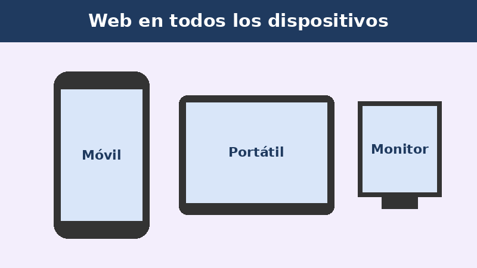
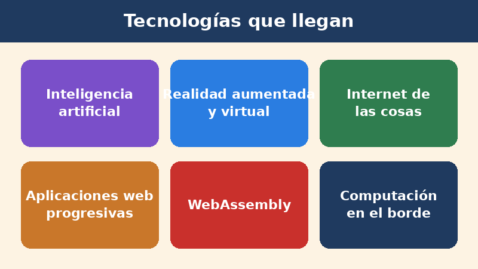
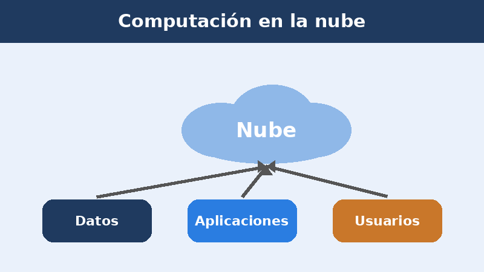

Para la sociedad
- Más acceso a la educación y la información.
- Trámites y servicios disponibles en línea.
- Herramientas más inclusivas y accesibles.

Proyecto de la asignatura Tecnologías Web, UTPL
Estas tecnologías están creciendo y cambian lo que una página web puede hacer.

| Tecnología | Qué es | En la sociedad | En los negocios |
|---|---|---|---|
| Inteligencia artificial | Sistemas que aprenden y generan respuestas o contenido | Apoyo al estudio y traducción de contenidos | Atención al cliente automática y análisis de datos |
| Realidad aumentada y virtual | Experiencias en 3D dentro del navegador | Educación práctica y turismo virtual | Probar productos antes de comprar |
| Internet de las cosas | Objetos conectados a la red | Hogares y ciudades más eficientes | Control remoto de inventarios y equipos |
| Aplicaciones web progresivas | Sitios que funcionan como una app instalable | Acceso desde móviles con poca conexión | Una sola versión para todos los dispositivos |
| WebAssembly | Código rápido que corre en el navegador | Herramientas potentes sin instalar nada | Aplicaciones complejas con menor costo |
| Computación en el borde | Procesar datos cerca del usuario | Servicios más rápidos | Menor tiempo de carga y más ventas |

